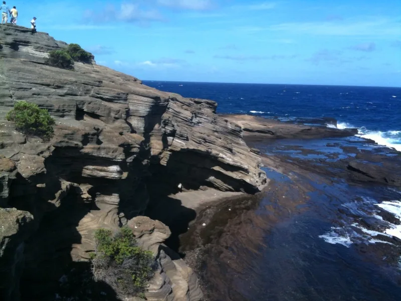
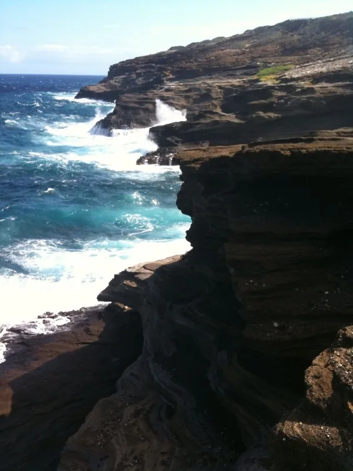

Blog · August 5, 2009
Waimanalo Bay, Oahu

photo captured on my iPhone
thank you, Apple, for the iphone, so I can capture views like this even when my camera is dead
Drove past Diamondhead today for some spectacular scenery. Here is a video I took on the phone.
Amy
First published on my old blog, amyrobinson.wordpress.com, August 5, 2009.